From the first scaffold to the submission build, in the order it happened — including the three fresh-context architecture reviews and everything they forced to be fixed, with the diagrams to show the shape of each change.
Each diagram was drawn by hand from the git record: the commit diffs, the ADRs in decisions/, the specs in specs/, and LIMITATIONS.md. They are explanations, not screenshots. Every caption names the exact commits the diagram compresses. Where the deck simplifies, it says so.
Three fresh-context reviews walked the codebase in November — 2026-11-11, 2026-11-15, 2026-11-16. Each was read-only, produced a report that lived in %TEMP% and was never committed, and each became an in-repo spec (37, 41, 42) whose phases were executed and merged. Their report files, where named: architecture-review-2026-11-15-1154.html (spec 41) and architecture-review-2026-11-16-1147.html (spec 42). The 2026-11-11 review's report is not named in the spec; only its findings survive, in spec 37. Slides 13–25 cover them in detail.
Slide 28 shows the current-state diagram that ships in the repository itself: docs/diagrams/architecture.svg, added in 5d67e0f. Reproduced, not redrawn.
docs/diagrams/architecture.svg, unchangedgit showSlide 31 lists every source: commits, reviews, ADRs, specs, documents.
| Date | Stage | What structurally changed |
|---|---|---|
| Sep 22 | 1 · Scaffold | Two dev containers (client :5173, server :3000), mock data, no auth, SQLite |
| Sep 23 | 2 · Scanner wired | Server reads real files; chapter-aware playback; same two-container shape |
| Oct 2 | 3 · First full system | One container serves app + API on :3000 · LAN read-only media · one scanner (ADR 005) · auth + profiles · security suite (spec 11) · specs/ADRs begin |
| Oct 12–14 | 4 · Android + offline | Capacitor shell, on-device downloads, IndexedDB replica, background audio, header auth (86484b5) |
| Oct 18–21 | 5 · Restyle (marker) | No server, DB or API change — listed for completeness; see the design deck |
| Oct 24–27 | 5b · Accounts & biometrics | Passkeys, device vault, lockout policy; runtime + dependency hardening |
| Oct 29–30 | 6 · Two databases | Production → hosted PostgreSQL (Supabase); SQLite stays for home + tests (ADR 019) |
| Nov 2–5 | 7 · A second door | Admin panel on its own listener :3100 (ADR 022) · OAuth demo accounts · GDPR ten-phase remediation · dependency audit fixes |
| Nov 10–11 | 8 · Locking the doors | Row-level security deny-all on every Supabase table (ADR 026) · one live session per device (spec 36) |
| Nov 11–13 | 9 · The deepening (spec 37) | 2026-11-11 fresh-context review → 29 findings → 11 phases / 45 steps: route modules, one client request interface, one rule one module, demo-only admin proxy. Merged f024c6b |
| Nov 12–13 | 10 · Three additions | Kids accounts (spec 38, ADR 033) · native OAuth handoff (spec 32, ADR 036) · native media proxy (ADR 031) · check-price buy links (spec 39, ADR 034) |
| Nov 14–15 | 11 · Aero + the 2026-11-15 audit (spec 41) | Design-lab v4 merged (UI only) · nine audit cards → ten phases; four spec-37-shaped recurrences + one live data bug (per-server audio dirs); 895→936 / 806→827 tests |
| Nov 16 | 12 · The 2026-11-16 re-audit (spec 42) + security | Fresh-context re-audit → nine cards + the /privacy blank page · wake budget module · GDPR household self-service fixed · SW reload gated on idle playback · the security remediation (SSRF, helmet, fail-closed, SQL console) · production readiness (backups, lint gate) · spec 44 offline progress |
| Nov 17 | 13 · Final fixes | Spec 45 re-audit remediation (claims-vs-tree) · docs reconciled (BRIEF.md, API + architecture diagrams, 5d67e0f) · submission |
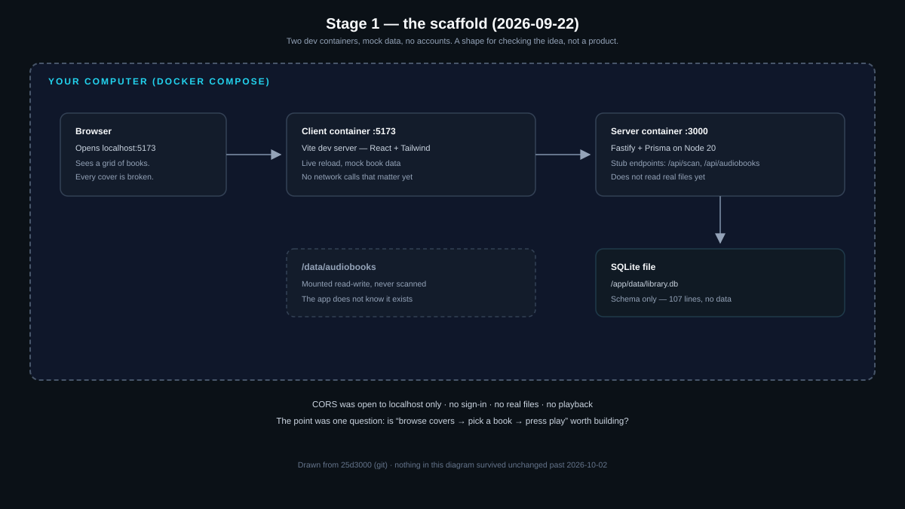
25d3000. Nothing here is simulated: it is the container layout from that commit's docker-compose, with the mock books removed from the picture.To answer one question: is “browse covers → pick a book → press play” worth building? The answer came in an afternoon.
A Vite dev server for the React UI, a Fastify server with two stub endpoints, an empty Prisma schema, and Docker so it booted the same on any machine.
Real files, sign-in, playback, a build step, a deployment story. Both ports were open to localhost; CORS was wide but local-only.
771731c).6c32f08) — same day, same commit family.The container layout, the ports, the database, the lack of sign-in. The scaffold's architecture absorbed the first real feature without moving a single service.
This is where the project stopped being a demo. Every later architecture decision — profiles, enrichment, offline, the admin panel — exists because real, messy files now flowed through the system and broke assumptions in interesting ways.
A second, divergent scanner implementation was created in this period. It was deleted nine days later in 467307c (ADR 005). One scanner is still the rule.
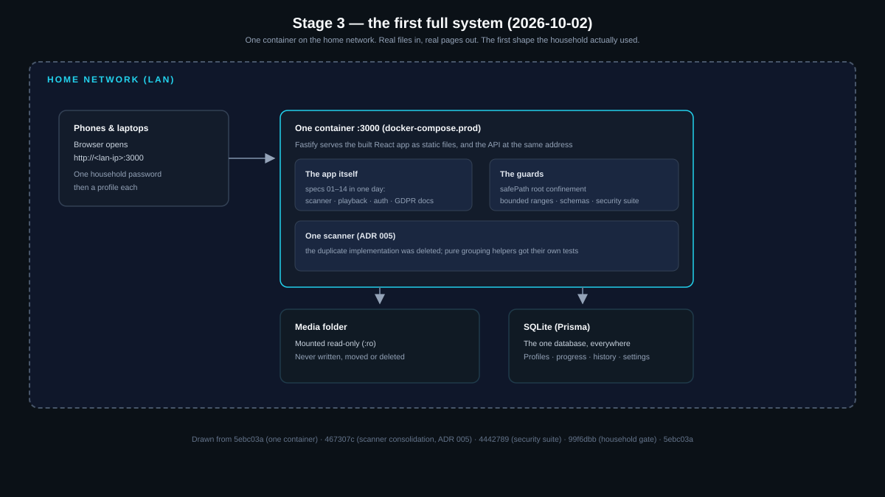
5ebc03a (single container), 467307c (one scanner), 4442789 (security suite), 99f6dbb (household gate).Household password + profiles, server-side resume position, PWA packaging, LAN deployment with the server hosting the built client, and the first security hardening with automated tests (spec 11).
Two containers → one. The dev servers retired; the app ships as static files from Fastify. Media moved to a read-only mount. The scanner was consolidated to one code path.
The specs, roadmap and the first ADRs landed the same day (f3dca59). From here on, the repository argues with itself in writing before it changes.
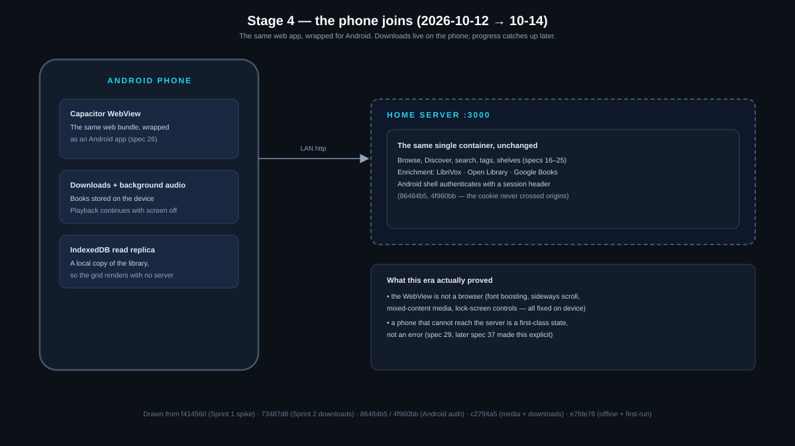
f414560 (spike) and 73487d8 (downloads + offline playback). The server did not change shape; the client grew a native shell.Capacitor Android shell, on-device downloads, background playback, first-run setup with no server present, Browse/Discover/search/tags/favourites (specs 16–25), enrichment with providers.
The WebView would not send the session cookie cross-origin, so the Android shell authenticates with a session header instead (86484b5, 4f960bb). Font boosting, sideways scrolling and lock-screen controls followed the same pattern: found on the device, fixed on the device.
Nothing about the server moved. The phone became a second, fatter client — with its own copies of the library and its own failure modes — and the API absorbed it unchanged.
On 2026-10-18 every surface was restyled around the capsule design system (834856d, d4220e9). The following three days were fixes and one consolidation: offline screens as first-class states (spec 29), and every user-facing string moved into one table (838c736, b226f4a).
Because “the codebase got a full restyle and nobody touched the routes” is a fact about the architecture, not just about the UI. The restyle was only possible because the redesign left no behaviour behind — routes, props and hooks all stayed put.
The GUI timeline deck (docs/presentations/design/) covers the restyle surface by surface. This deck records it as the one week where the whole app changed and the architecture did not.
8f1555a).d4195ba, 84734fa).1da2444 hardening runtime and dependencies the same week.Not a replacement for the household password — that stays as the break-glass. Not a second identity system; the passkey proves the device, the profile proves the person.
Four days and two worktrees; the largest single feature between the redesign and the database migration. Honest notes from the record:
a67f033) and its test fallout (c0b64fb) both landed 2026-10-29.05c4db5) — same week, same hygiene.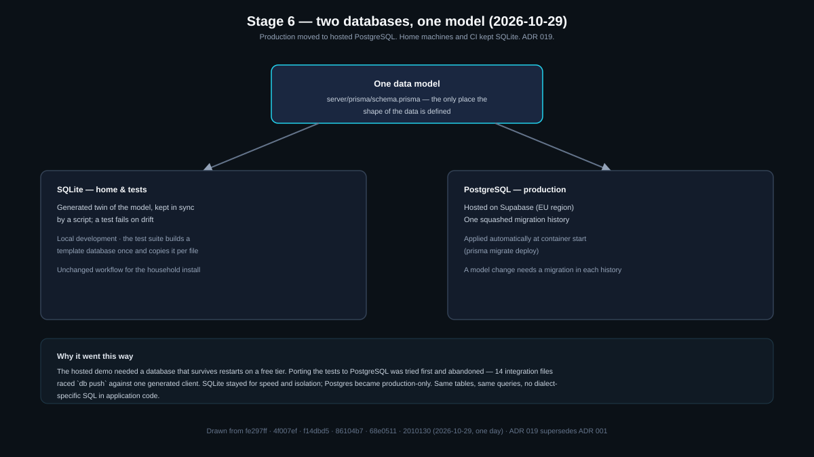
fe297ff…2010130) and ADR 019, which supersedes ADR 001.The hosted demo needed a database that survives restarts and deploys on a free tier. SQLite files on ephemeral disks do not. That is the whole reason; it was not a fashion choice.
Fourteen commits in one day: the migration, the provider fix, the squashed history, the CI fight, and the marker of a failed deploy cleared the next morning (593ac85). Porting the tests to PostgreSQL was tried and abandoned — it made the suite slower and flakier.
Every model change ships a migration in each history. A test (database-schema.test.ts) fails the build if the two schemas drift apart. Production deploys run migrate deploy at container start.
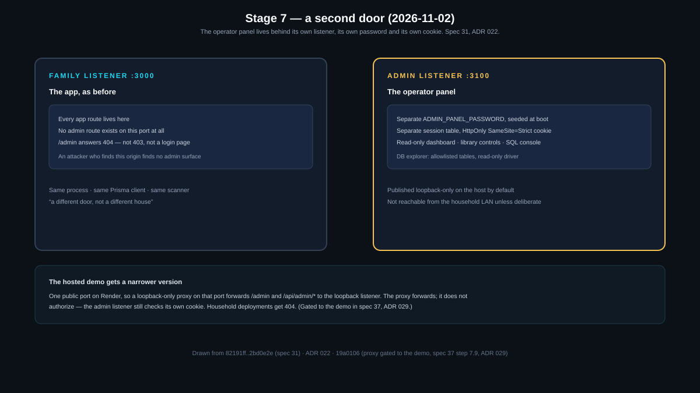
82191ff…2bd0e2e), ADR 022, and ADR 029 (the demo's proxy, gated in spec 37).An admin panel on the family port would share its cookie jar with every browser in the house. A separate listener with its own password and session table means finding the app unlocks nothing about the panel — and vice versa.
OAuth accounts for the public demo (Nov 4 — nine fixes of cookie and redirect debugging) and the production upload path (1f01f2a).
On Nov 5 the whole GDPR remediation landed across ten phases (ce4bbc6), driven by the audit that week. The admin panel is what makes that work manageable; it is also new attack surface, which is why it got its own door.
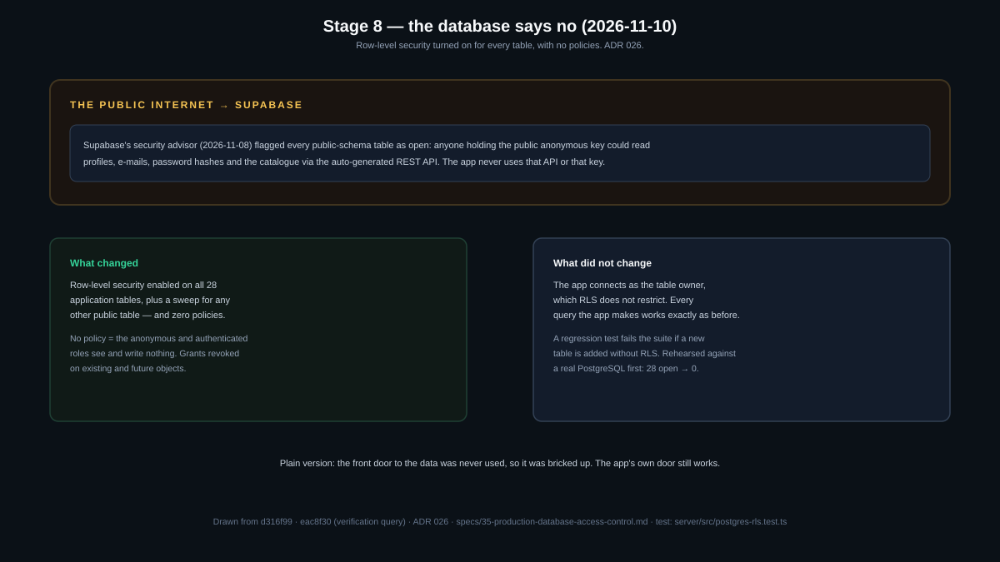
d316f99 and ADR 026. Supabase's advisor flagged the exposure on 2026-11-08; the fix landed 2026-11-10.Supabase gives every project an anonymous key that can reach its tables through an auto-generated API. This app never used that path — so the path was closed entirely: RLS on all 28 tables, zero policies, grants revoked. Verified 28 open → 0 against a real PostgreSQL; a test keeps new tables from shipping without it.
Every sign-in used to mint a new session row — fifty sessions for one phone. Now the device's existing session is rotated in place, so the sessions panel lists devices, not events, and “first signed in” stays true. A cleanup pass for the backlog ran in dry-run mode first (a3a5c0b).
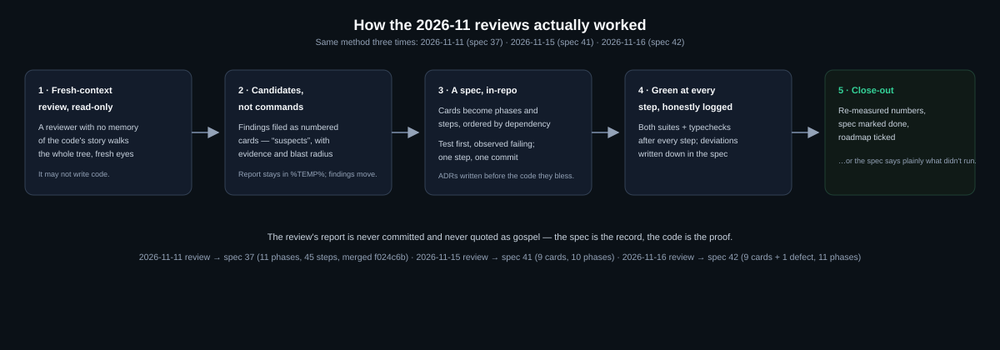
A read-only pass over the whole tree by a reviewer with no investment in the story so far. No fixes, no commits — just findings, each with evidence and a blast radius.
Nine places where a module's interface was nearly as heavy as its implementation — and knowledge leaked across seams. One recurring shape: a rule was extracted into a tested pure function, and the code that calls it kept its own copy. Appendix A of spec 37 lists 29 findings.
Most reviews produce opinions. This one produced a dependency-ordered plan — 11 phases, 45 steps — where every step was test-first, one commit, and green at the end. The plan, not the report, is the durable artefact.
The three reviews at a glance. 2026-11-11 — pre-release status check → spec 37, 11 phases / 45 steps, entry: “master is clean”, exit: merged f024c6b, verified 2026-11-17. 2026-11-15 — post-aero audit → spec 41, 9 cards / 10 phases, entry: master green at baseline, exit: numbers re-measured, roadmap ticked. 2026-11-16 — post-41 re-audit → spec 42, 9 cards + 1 defect / 11 phases, entry: master green, exit: re-measured, one process-note red push owned. Each report lived in %TEMP%; each spec is the record.
| # | Candidate (as named in the review) | Where it landed |
|---|---|---|
| 01 | Six request idioms, six guarantee sets — the app has ~8 near-identical private request helpers | Steps 1.1–1.6 · d1521bb…316eedf · one interface, five guarantees, admin sibling, fetch shim deleted |
| 02 | Progress keyed by bare book id — collides across servers (spec 30 union-of-shelves made it live) | Steps 2.1–2.2 · cee4ba2 · server-scoped keys; typecheck gate made it a compile error |
| 02b | Two implementations of the library source, merged by hand in App.tsx | Steps 3.1–3.3 · 70a7972 · LibrarySource interface + mergeShelves; App.test.tsx now exists |
| 03 | App.tsx is an untested orchestration layer — 1,134 lines, 20 useState, 13 useEffect | Steps 4.1–4.6 · f254368…c78f975 · profile rules, refresh policy, background lock, offline gate, session probe, offline flag — each extracted + tested |
| 04 | app.ts is 64 routes + 106 inline Prisma calls in one function; 35 routes schema-less, 6 validating nothing | Steps 7.1–7.9 · 8e10d36…6baa4ad · route table frozen by test, then split into routes/ modules; every mutating route declares a schema |
| 05 | precedence.ts is dead code — the override rule re-derived at three call sites, re-implemented twice in app.ts | Steps 5.1–5.2 · ADR 028 · fe0a8cc · one resolver; enriched now beats embedded; legacy metadataSource="user" sentinel retired |
| 06 | GDPR tables enumerated three times and already disagreeing — webAuthnChallenge erased but never exported | Steps 6.1–6.2 · c85fa15, bca51d0 · one module + a schema-guard test that reads schema.prisma |
| 07 | Copy strings leak into pure logic modules (position.ts, browse.ts, local/*) | Steps 8.1–8.3 · 5c0d9c5…2c66eec · logic returns data, callers render copy |
| 08 | The AI feature has one implementation and no seam — and the prompt carries file paths | Steps 9.1–9.2 · 047f9fd, 4139fab · injected LLM adapter; server path no longer sent to the model |
| 09 | Provider clients in two directories; two similarity functions; Audnexus still in the provider list | Steps 10.1–10.3 · ADR 030 · 5a3f4de, 1ff01dd, be00cd1 · one home under metadata/; Audnexus left the title-driven interface |
Test first, observed failing · one step, one commit · tree green at the end of every step · steps ordered by dependency, not severity · server phases run in a different order than the review's numbering (rule extractions before the route split).
Steps 5.1, 7.9 and 10.3 each stopped at “Decision needed” until ADR 028, 029 and 030 were written. Implementing first and ADR-ing after is how ADR 009's drift happened.
No rewrite of App.tsx/app.ts (2,000 lines can't be reviewed) · no response-shape changes (the phone ships a version behind) · no framework changes · the derived precedence layer stays unbuilt (ADR 009 unresolved, on purpose).
Why the plan is ordered by dependency, not severity. Phase 7 (the route split) works by moving app.ts apart. The two rule extractions it would otherwise scatter — the precedence resolver (phase 5) and the personal-data list (phase 6) — land first, so the split moves already-consolidated code. Phase 6 then unblocks the GDPR guard; phase 7.9 needs a decision that gates the whole admin story. Every ordering choice in the table is there for a reason like this — severity would have done security first and produced a worse plan.
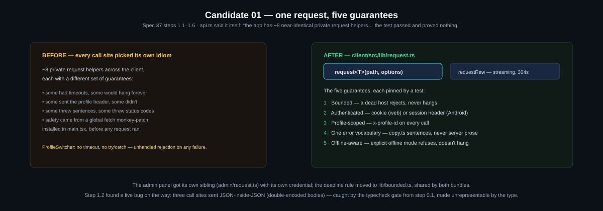
The safety of a request depended on call-site discipline plus a global monkey-patch of window.fetch installed before anything ran. A module was correct only because something else had run first.
1.1 named and tested the five guarantees · 1.2/1.3 migrated hooks, components and the admin client · the conditional-GET rule moved into the interface · 1.5 made bounded requests correct with no shim installed · 1.6 deleted the shim. ProfileSwitcher got its first test file.
CoverImage keeps its own fetch — media URLs with tokens in the query string, blob bodies, not JSON. Deliberately out of scope, and the spec says so rather than silently folding it in.
How to check the five guarantees yourself. Two were proved by deletion — remove credentials: "include" and the authentication test fails; remove the timeout and the bounded test fails. The other three are pinned by construction: the profile header comes from sessionHeaders(), offline mode throws before any fetch happens, and the error vocabulary is copy.ts — the server's prose never reaches the screen. All five tests were written and observed failing before the module existed; request.ts imports no React and touches no DOM.
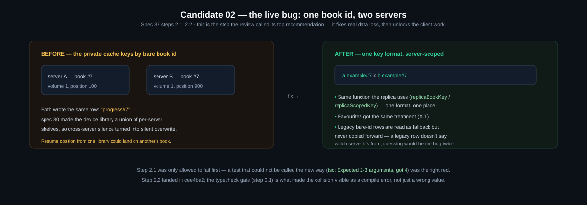
cee4ba2. The review called this its top recommendation.Spec 30 shipped the union-of-shelves device library in October — after it landed, every phone with two servers had two book #7s, and they raced. The bug shipped in a released shape; the review found it by following the key format, not by user report.
One key format: replicaBookKey(serverId, bookId), shared with the replica. Legacy bare-id rows are read as a fallback but never copied forward — a legacy row doesn't say which server it's from, and guessing would recreate the bug with extra steps.
Step 2.1's test was observed failing first — and it failed twice, at runtime and at tsc (Expected 2-3 arguments, got 4). Step 2.2 turned it green without touching anything else. That red was the review working as designed.
Reproduce it in two minutes. Check out the commit before step 2.1 (git log --oneline -- client/src/local/privateCache.test.ts), run npm test -- privateCache in client/ and watch the new test fail — the second write for book #7 overwrites the first because both use the bare id. Then check out cee4ba2 and watch it pass. The sibling fix for favourites (per-server keys, same function family) is the same shape — one key, one home, one test.
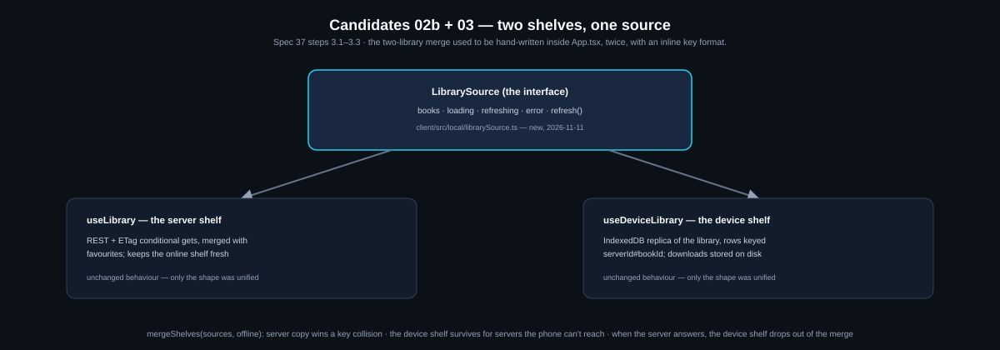
70a7972, merged f024c6b). App.tsx's hand-written merge and inline key format are gone.Two implementations of one concept — the server shelf and the device shelf — with no shared interface, merged by hand in App.tsx:404–414. Two adapters exist; the seam was “fake” until the interface was real.
local/librarySource.ts: the interface + mergeShelves. Both hooks satisfy it; useDeviceLibrary got its first test file (seven operations); App.test.tsx exists with the two shelf modes pinned.
No rewrite of the hooks; no new state library; the merge rule is three lines and one key function. The interface was the missing piece, not the logic.
The merge rule, exactly as specified. mergeShelves(sources, offline): the server copy wins a key collision · the device shelf survives for servers the phone cannot reach · when the server answers, the device shelf drops out of the merge. The merge uses replicaBookKey and nothing else — one key format, no inline spellings; the two hooks and App.tsx were each stripped of their private copies (caa5484, 316eedf). ServerLibrary.tsx lost props with it — the interface is the contract, not the prop drilling.
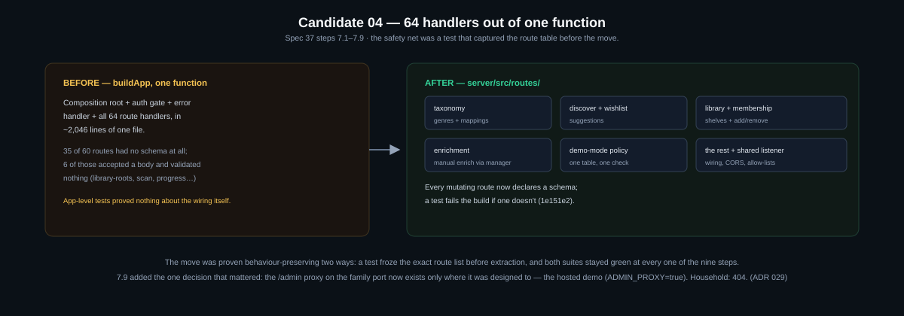
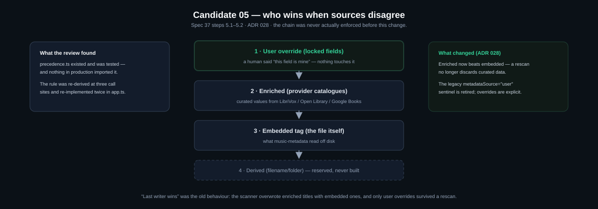
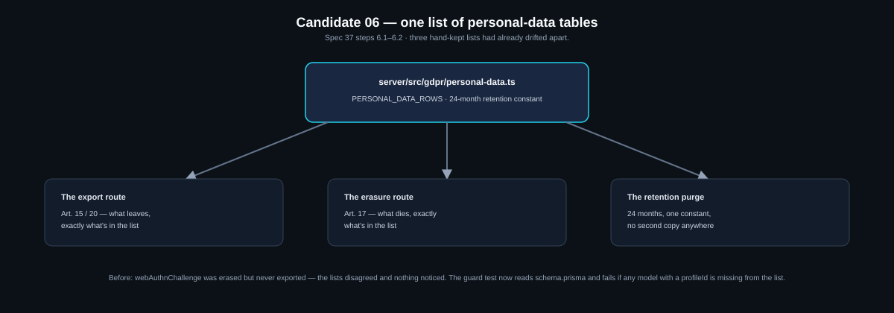
c78f975.derived precedence layer (ADR 009) was never implemented; ADR 028 records the decision instead.f024c6b (2026-11-13), bringing candidates 1–5 and 9 plus the spec's reconciliation and GLOSSARY.md.webAuthnChallenge missing from the export; the route table was frozen before the split.A review that produces an ordered, honest, test-first plan is worth more than a review that produces a verdict.
git show f024c6b for the merge; git log --grep "spec 37" for the ~60 step commits; specs/37-architecture-deepening.md header for the honest status block.
Three calendar days (Nov 11–13) plus the review day. Scope stayed: no framework, no response shapes, no rewrites.
Audit the spec the way it audited the code. Every claim on this slide and the previous four corresponds to a diff you can read, a test you can run, or a header the spec rewrote when it caught itself lying. Nothing here is believed on authority — that is the point of writing the status block that way, and it is why this deck quotes the header rather than the checkboxes.
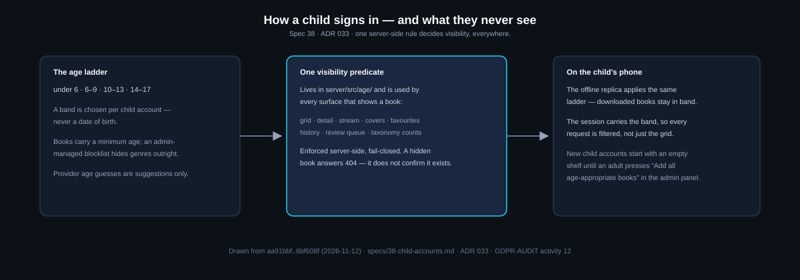
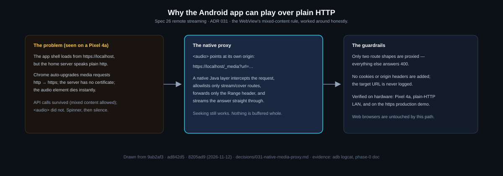
Google blocks sign-in inside embedded WebViews, so the Android handoff goes through a system browser tab with a one-time, 60-second code. The deep link carries no token; the session is minted at exchange, by the same call as password sign-in.
Buy links are built from a store registry, never show a stored price as current, and hide from child accounts by the same visibility predicate as books (local/kids.ts, later swept in spec 41).
Three doors opened without widening the house: a child's view, a sign-in handoff, a media pipe. Each got its own ADR and its own verification; none loosened an existing rule.
Why these three. Of the week's four doors, these three were the ones where the app's promise (“usable by your household, offline, and safe for children”) bent but didn't break. Kids accounts close an Art. 8 GDPR gap with enforcement on every surface, not a UI filter. The media proxy keeps the offline promise playable on plain-HTTP LANs. Native OAuth lets Google sign-in survive a platform that blocks embedded web views — with the smallest possible token footprint (one 60-second, single-use code, exchanged server-side, minted once).
Fresh-context review of the tree after spec 37 and the aero merge. Report: architecture-review-2026-11-15-1154.html — kept in %TEMP%, never committed; the findings became spec 41 on the same day.
| Card | Holding |
|---|---|
| 1 | Live data bug — offline audio keyed by bare book id; per-server directory fix (next slide) |
| 2 | Buy links built outside the store registry — buildBuyLinks now composes it; no URL written twice |
| 3 | Age ladder asserted twice — one shared fixture both suites read; fail-closed became contractual |
| 4 | Kids buy surfaces decided ad-hoc — one predicate (local/kids.ts); a render sweep proves every surface obeys it |
| 5 | GDPR erase/export/guard from three hand-kept lists — now generated from one declarative PERSONAL_DATA_ROWS table |
| 6 | Refresh coalescer copied per hook — one shared run in lib/coalesceRefresh |
| 7 | Shelf refresh did N decrypts for N books — one bulk read + bounded-parallel decrypts |
| 8 | AccountGate untestable — split into surfaces + useAccountGate state machine |
| 9 | Small seams — shared rate limiter; one composite key; tripled line collapsed; listener wiring shared |
| Before | After | |
|---|---|---|
| Client tests | 895 | 936 |
| Server tests | 806 | 827 (4 skipped) |
| Build | ~26 s | ~13 s |
| App chunk | 279.8 KB | 283.3 KB (+3.5, budgets met) |
| npm audit | — | high-severity clean; client 4 low (build toolchain) |
Tested pure module, callers with their own copies: buy links vs the registry, the age ladder, the kids buy surfaces, the refresh coalescer. The 2026-11-15 audit is the proof that deepening work decays without guards — which is why the fixes shipped as fixtures, sweeps and one module each, not as exhortations.
Card 1 completes ADR 020 / spec 30 rather than reopening it. No decision in decisions/ was contradicted.
The same week, the design-lab's “aero” line (v1–v4 passes) merged to master (8476aa2 design-lab line → ad56ddd master; plus the rem font-scale fix and a jsdom flake fix). Visual change only — the architecture guards (budgets, both suites, no behaviour move) held through the merge.
No reopening of decisions · no response-shape changes (the phone may be a version behind) · no rewrites — Phase 8 splits AccountGate without redesigning it · no new dependencies (the one hash uses an already-client-side library) · roadmap item 41 ticked 2026-11-15 with all numbers re-measured.
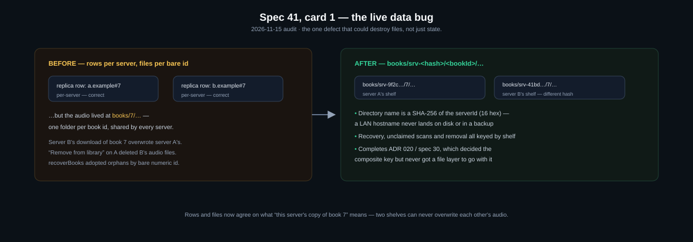
2e43e92…18f6eb8. Rows and files now agree on whose copy of book #7 this is. bookDir(serverId) hashes the serverId — a LAN hostname never lands on disk or in a backup.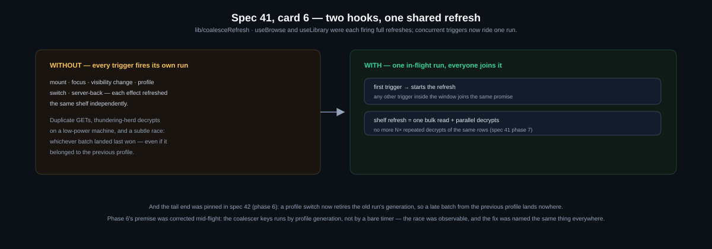
82bc5b0. Six refresh triggers used to each fire; now one run is shared. Card 7 rode with it: the shelf refresh is one bulk read + parallel decrypts (0e31df5).Erasure, export and the schema guard are now generated from one declarative PERSONAL_DATA_ROWS table (with an erase strategy and a select per row). The guard widened to demand exactly that, so the list is complete by test, not by diligence. f80d307.
JSX chrome over an accountGate surfaces component and a useAccountGate state machine (727125c). Not redesigned — split, testable, same behaviour.
Buy-context rate limiting moved onto the shared bounded limiter (9.1); one spelling of the composite cover key (9.2); one resolveSessionProfileId (9.3); listener wiring shared between family and admin (9.4).
Why this card deserves a whole slide. The rows and the files were telling two different stories about who owns book #7: <serverId>#<bookId> in the replica table, books/7/… on the filesystem. Spec 30 decided the row key; nobody carried the decision down to the files — the audit caught the half-finished decision two releases later, because it walked the tree from the disk upwards instead of trusting the spec to have been implemented fully.
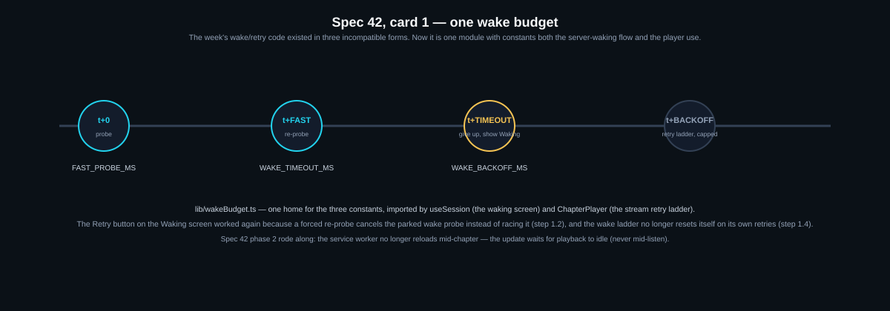
2248029…fc0d49d. The week's wake/retry code existed in three incompatible forms; now FAST_PROBE_MS · WAKE_TIMEOUT_MS · WAKE_BACKOFF_MS have one home, and Retry on the Waking screen works again.x-profile-id via requestRaw; boundedFetch-bypass class closed by construction, not discipline/privacy renders in every state — online, waking, precached-shell-offline; pinned by a parity test (and a 9.93 kB lazy chunk)srv-<hash>/ file layershelfScopeOfui/primitives.tsx pruned and tested — three dead exports gone; the absorbing surfaces got direct contracts; shellTint goneisDemoExperience, JSON-boundary-checked/privacy ships as its own 9.93 kB precached lazy chunk.npm audit --audit-level=high clean (server); client 4 low, all in the build toolchain; not taken (breaking downgrade).8ebf932 was pushed red (tsc -b error — vitest does not typecheck); fixed in 3126529 within the hour; HEAD verified green end to end./privacy with the server cold or waking was left as the deployer's final smoke test — named, not claimed.Method and report: architecture-review-2026-11-16-1147.html (fresh-context explore), kept in %TEMP%; findings became spec 42 the same day.
In the household deployment, /api/me/export, self-erasure and the Art. 16 PATCH didn't work — the client never sent x-profile-id, so the server couldn't tell which resident asked. Nobody noticed because the demo experience (account-based) worked fine, and the household path had no test.
The spec's phrase is exact: boundedFetch-bypass, closed by construction — every personal-data route now goes through the one request interface (requestRaw), and a noBypassFetch sweep test fails the build on orphans. Not "be careful" — impossible to do again.
/privacy blank page on the production demo — compression ate the document and the CSP refused the provider covers; now served by the server document when reachable, the in-app route when not, precached and tested (cd8b94a).client/dist crashed every route; now the listener registers nothing and answers like admin does, honestly labelled (146ea6a).bd9fd42).The next re-audit found the week's fixes had their own failure shape — empty-dump backups, name-based SQL redaction, demo deploys without migrations. Next stage.
The demo deploys exercise account sign-in daily; the household deployment has no automated self-service test at all. The failure was invisible from both directions — too quiet for users, too niche for the suite.
boundedFetch exists as an escape hatch for deadlines; several call sites used it to skip the request interface entirely. The spec narrowed the blast radius honestly: only routes carrying personal data or session state had to move (ProfileGate, ProfileRegistration, DeviceUnlockSettings, SessionSettings, passkeys, useAccountGate); plain probes like /api/health and /api/config legitimately stay. The sweep test pins the class shut.
Personal-data routes go through requestRaw or they don't ship. The sweep test fails the build on orphans. GDPR self-service is not a feature with a path; it is a guarantee with a gate.
| Phase | Items (headline) |
|---|---|
| Phase 1 — HIGH | SSRF cover download (per-hop validation, DNS check, byte cap, magic bytes) · admin cookie Secure · admin listener binds 127.0.0.1 by default · family cookie SameSite=Lax · helmet everywhere with a real CSP |
| Phase 2 — MEDIUM | Enrichment gate (child→403, force-gate, canReadMediaItem) · GDPR export completeness · SQL console blocklist expansion (pg_terminate_backend, set_config, dblink…) · child→member role mapping propagated at all sites |
| Phase 3 — LOW | Trust-proxy and x-forwarded-* handling · OAuth/Discover hardening · client-side href/scheme checks, referrer policy, prod console stripped · Supabase downloads under a byte cap |
| Phase 4 — accepted | Documented, not code: Caddy admin lockdown, accepted-risk register (R1–R4), production HTTPS guide — the things that are deployment, not source |
And the evening production-readiness pass closed the remainder: transactional scanner delete/recreate + WAL; refusal of destructive reconciliation on a suspicious walk; OAuth open sign-up gated demo-only server-side; admin password reset now deletes target passkeys; passkey lockout made atomic; real SECURITY.md finally filed.
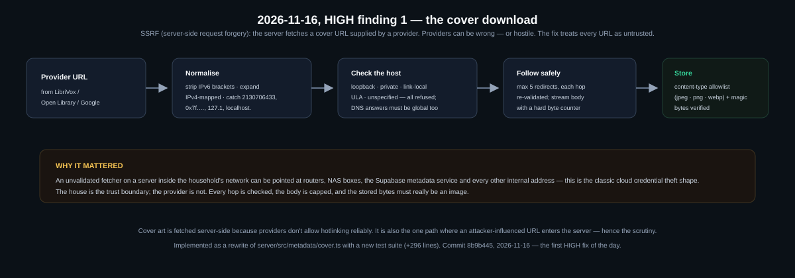
8b9b445 (+296 lines incl. tests). Every hop re-validated; the body is never buffered whole.Four HIGH, a MEDIUM tranche (enrichment gate, GDPR completeness, SQL console blocklist, role mapping), LOW/hygiene items, one accepted-risk phase. The plan rated only the code-fixable items as “fix now”; Phase 4 records what was deliberately not code — deployment hardening, not source. Roughly twenty commits in one day, each with a failing-first test where the behaviour was observable.
Every fix answers “who may ask, from where, with what shape, and how much may they take?” — auth, network, payload, rate. No finding was about cleverness; they were all about doors left ajar.
Named in docs/risk-register.md: R1 no monitoring (host failure found manually) · R2 same-site backup only · R3 SameSite=Lax without double-submit tokens (LAN-trusted household) · R4 the demo is a public beta, not a staffed service. Each has a control, a rationale and a review date (2027-05-16). Not fixed quietly; not forgotten.
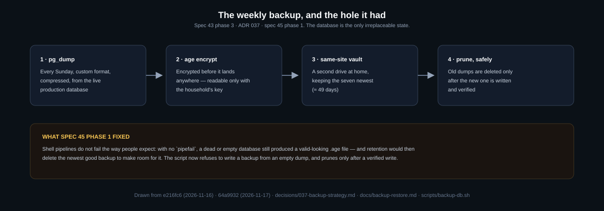
e216fc6 (spec 43 phase 3) and ADR 037. Deliberately not 3-2-1: no second site exists; the restore drill is the point.Weekly encrypted same-site dumps · a restore drill (docs/drills.md) · a Render blueprint for the demo (render.yaml) · a five-minute rollback runbook · a smoke script · an eslint gate with react-hooks as errors, in CI.
A household release line, not an SRE programme. No SLOs, no monitoring stack — accepted risk R1 in the risk register. The v0.2.0 tag waits for two verified dumps and a drill; it is deliberately untagged.
After playing offline, reconnecting pushed nothing back — the next online refresh could overwrite the cache. Now newer cached positions push on reconnect; ties and unparseable values go the server's way. Client clocks are never trusted.
pipefail meant a dead database still produced a valid-looking file, and retention would then delete the newest good one. Now: refuses to write, prunes only after a verified write (64a9932).b71f43e).NODE_VERSION pinned to 24 (e902622).544bc09).58333ac).Retry-After the spec promised, pinned by test (14ccde1) · em-dashes corrupted by refactors restored (50d8dee) · every suppression needs a reason and is CI-gated (4017fe5) · offline→online push seam pinned (9f54ade).49 files, +2010/−175: every document reconciled against the code. New: BRIEF.md (the non-technical signpost), docs/diagrams/architecture.svg (next slide), docs/diagrams/api.svg (generated from live route schemas), .env.example rewritten.
Later Nov 17 commits (54bff74 this deck's sibling, 5ac4290, e17df55, 5683adb, 605d391) fixed post-submission issues — admin table columns on Postgres, Supavisor-incompatible boot seeds, enrichment fallbacks. The submission build is 5d67e0f; master is further along.
95b9159 · roadmap item 45 done 2026-11-17 · the named-and-accepted items stay accepted (no CSP report-to; unordered first-1000 cap; console side-effect edges; over-strip of future columns).
Spec 45's audit compared the documents to the repository, not to intentions: every claim in ROADMAP, the ADRs and the specs was checked against the tree they described. The gaps it found are the gaps documented here — no more, no less.
All three re-audits (spec 41 → 42 → 45) found the same shape in newer work — the week's own fixes had the failure mode of the week's own fixes. Maturity isn't the absence of the defect; it's a gate that catches it within days.
Tagged: no. Waiting on: two verified weekly dumps and one restore drill — not on code. The camera is pointed at the process, on purpose.
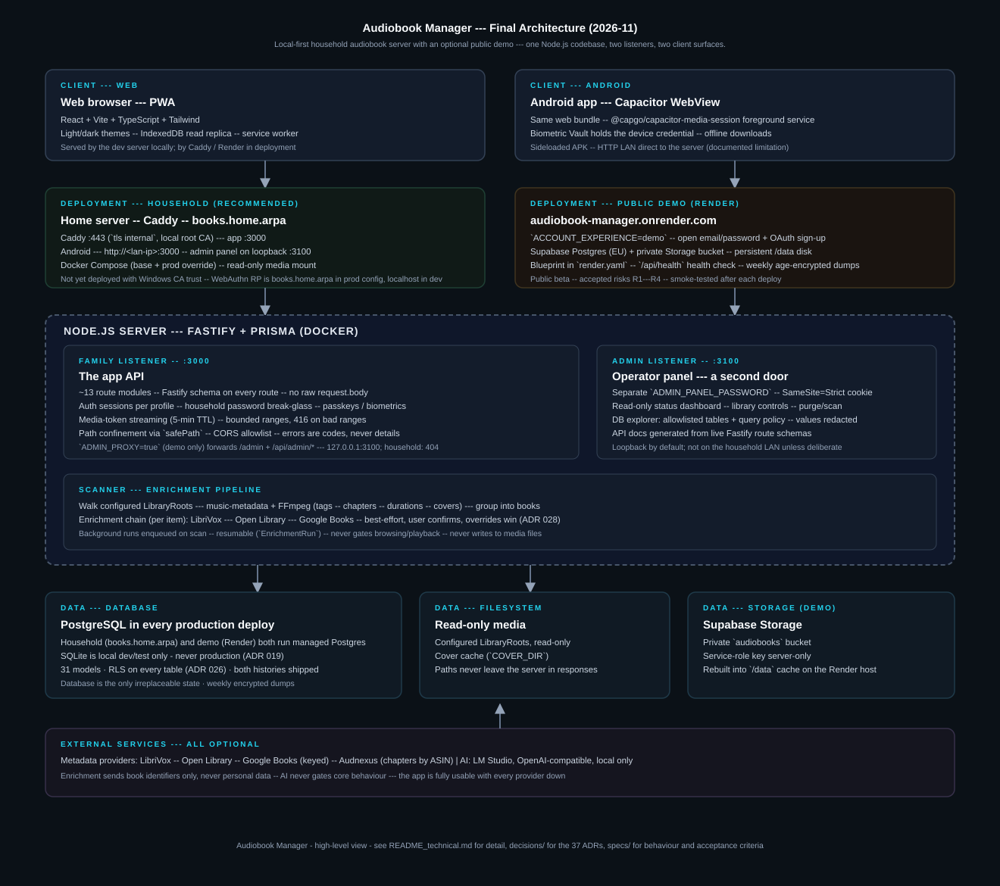
docs/diagrams/architecture.svg, reproduced unchanged — added in 5d67e0f. High-level; the per-route reference is docs/diagrams/api.svg (generated by scripts/generate-api-diagram.cjs from live route schemas).| When | Change | What moved | What stayed |
|---|---|---|---|
| Oct 2 | Scanner consolidation (ADR 005) | One scanner; pure helpers extracted + tested | The scan flow, the data, the UI |
| Oct 2 | Single container (5ebc03a) | Static client serving into Fastify; docker-compose.prod.yml; read-only media mount | Both apps' code — only how they ship |
| Oct 29 | Dual database (ADR 019) | Production history → PostgreSQL; SQLite twin generated for dev/CI; drift test | The model; every query; the household install |
| Nov 2 | Second listener (ADR 022) | Admin panel on :3100, own password/session, loopback-only | One process, one Prisma client, one scanner |
| Nov 10 | RLS deny-all (ADR 026) | Permissions inside Supabase; regression test in the suite | Every app query — owner role bypasses RLS |
| Nov 11–13 | Spec 37 — the deepening | Route modules; one request interface; one rule per module; demo-only admin proxy (ADR 029); personal-data module; provider home (ADR 030); precedence resolver (ADR 028) | app.ts/App.tsx wholesale; the API contract; the frameworks; behaviour, by test-first |
| Nov 15 | Spec 41 — the audit | Per-server audio directories; GDPR executors generated from one table; one coalescer; one kids predicate | Every public contract; budgets re-met; no reopens of decisions |
| Nov 16 | Spec 42 — the re-audit | Wake budget module; household GDPR self-service via requestRaw; /privacy parity; generations per profile; envelope primitives tested | The waking design itself; auth/session/crypto; all out-of-scope by contract |
| Nov 17 | Spec 45 — claims vs tree | Backup emptiness guard; value-shaped redaction; migration-before-start; CI suppression gate; prose fixes | Everything named and accepted stays accepted — visibly |
The pattern: each change moved code or permissions into one well-guarded place and left everything else standing. The three review cycles (37 → 41 → 42) each re-found the same defect shape in newer code — and each time the response was to turn the finding into a fixture, a sweep or a gate, not a resolution to be tidier next time.
Where to read the deep detail in this deck. Spec 37 (the deepening): slides 13–19 — the review itself, the plan, candidate 01 (client request interface), candidate 02 (the live key collision), candidates 02b/03 (the library seam), candidates 04/05/06 (route split, precedence, personal data), and the honest close-out. Spec 41 (the 2026-11-15 audit): slides 21–22 — the nine cards, the live per-server audio bug, the refresh coalescer, generated GDPR executors. Spec 42 (the 2026-11-16 re-audit): slides 23–24 — the wake budget, the household GDPR self-service hole, /privacy. The 2026-11-16 security remediation: slides 25 and 30. Spec 45 (the claims-vs-tree pass): slide 27. The consequences of doing nothing about each finding live in LIMITATIONS.md.
| Date | Commit(s) | The door it closed |
|---|---|---|
| Oct 2 | 4442789 | Path traversal, unbounded ranges, raw error leaks — root confinement (safePath) + first automated security suite (spec 11) |
| Oct 18 | e8844ec · 3677276 | Capacitor origin not allowed; WebView served over http so the LAN server is reachable — the WebView scheme incident |
| Oct 24 | 1da2444 | Outdated, vulnerable runtime and dependencies — hardened as passkeys landed |
| Oct 29 | 05c4db5 | Personal network details in fixtures and copy — scrubbed before any public deploy |
| Nov 4 | 49c28ad…7066043 | OAuth on the public demo — nine fixes: cookie paths, PWA fallback interception, signed-out loops; open sign-up later gated demo-only (Nov 16) |
| Nov 5 | e17e66b | Dependency audit findings — applied; agent artifacts ignored |
| Nov 10 | d316f99 | Supabase tables world-readable with the public anon key — RLS deny-all, 28 tables + sweep (ADR 026) |
| Nov 11 | 19a0106 · 7452ef7 | Admin proxy reachable in household deploys → demo-only (ADR 029); admin SQL paging parameterized, shared readonly driver |
| Nov 12 | de1bad2 | OAuth handoff codes: one-time, 60-second TTL, hashed — no tokens in deep links (spec 32) |
| Nov 16 | 8b9b445 | SSRF in cover downloads — per-hop validation, DNS check, byte cap, magic bytes (Phase 1 HIGH #1) |
| Nov 16 | 9249929 · 53c64fb | No app-level security headers → helmet + CSP everywhere; admin cookie Secure; SameSite=Lax; admin binds 127.0.0.1 |
| Nov 16 | 48b243c · ffa4464 | Fail-open dev defaults → fail-closed in production; validation erasure unification; no path leaks in family API |
| Nov 16 | 10a57d5 · ed326d5 | GDPR export completeness · SQL console blocklist expanded; credential and hash columns never leave |
| Nov 16 | bd0f05e · e33e6b7 | Scanner could mass-delete on a suspicious walk — transactional replace + WAL; destructive reconciliation refused |
| Nov 16 | 6546f2a · f8a85b9 · 0ec23c7 | Open OAuth sign-up → demo-only, server-side; admin reset deletes target passkeys; passkey lockout atomic |
| Nov 16 | 78370b8 · df535d9 | Supabase downloads under a byte cap; href/scheme checks, referrer policy, prod console stripping |
| Nov 17 | b71f43e · 14ccde1 · 4017fe5 · 64a9932 | Hash redaction by value shape; Retry-After on 429; suppression reasons CI-gated; backup refuses empty dumps |
specs/37-architecture-deepening.md — defects, steps, status block, appendices A/Barchitecture-review-2026-11-15-1154.html — the 2026-11-15 report; lived in %TEMP%; never committed (spec 41 Phase 0.3 records this)architecture-review-2026-11-16-1147.html — the 2026-11-16 re-audit report; lived in %TEMP%; never committed (spec 42 Phase 0.3 / close-out records this)decisions/ — 005, 009, 019, 020, 022, 026, 028, 029, 030, 031, 033, 034, 037 quoted herespecs/ — 11, 15, 26, 28, 29, 30, 31, 32, 35, 36, 37, 38, 39, 41, 42, 43, 44, 45LIMITATIONS.md §5 (flakes), §6 (items queued into spec 37) — cited where useddocs/security-remediation-plan-2026-11-16.md · docs/risk-register.md · SECURITY.mddocs/diagrams/architecture.svg · docs/diagrams/api.svg · GLOSSARY.md · BRIEF.md · roadmap.mdspecs/evidence/ · device photos · device verification notesStage diagrams were drawn by hand for this deck; each caption names the commits it compresses. The slide 28 diagram is the repository's own, unchanged. Nothing in this deck was generated or retouched by an image model; the SVG diagrams are plain Arial text in boxes, exactly reproducible.
5d67e0f) audited claims against the tree, not against intentions.Household audiobook server.
This deck: the architecture at every stage — including the three reviews that kept it honest.